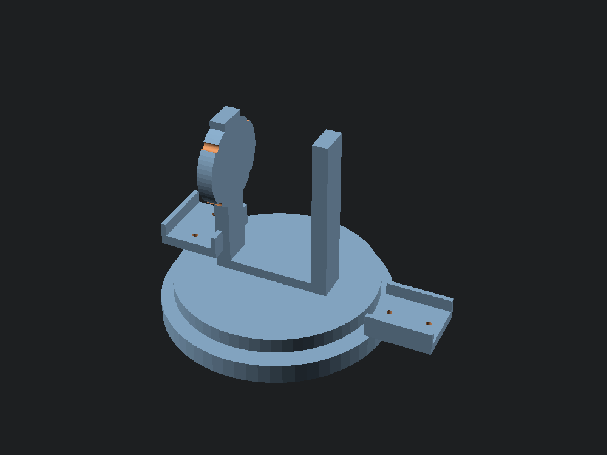

SPECTRUM POSITION
137 MHz · 100M–3G span
137 MHz — NOAA / Meteor-M2
Satellite ground station: QFH + 2-axis tracking rotor
A quadrifilar helicoidal antenna for weather-satellite reception, motorized on an azimuth/elevation rotor that speaks the same rotctld protocol as Gpredict — plus a standalone Skyfield client that can point at a named satellite with no GUI at all.
- Resolution
- 0.088°/step — from the gearbox's real 63.684:1 ratio, not the rounded "1/64" spec sheet
- Homing
- Limit switches on both axes; firmware won't trust a position it hasn't referenced
- Antenna choice
- QFH's no-null hemisphere pattern over a higher-gain crossed-Yagi, deliberately — the cheap rotor's torque budget decided it
Caught before it shipped
Rendering every part to an actual mesh — not just "no compile errors" — found the elevation fork printing as two disconnected halves, and a shaft coupler hollow on both sides of its own joint. Both fixed and re-verified.
Illustrative pass, not live telemetry
AZ/EL commanded via rotctld
